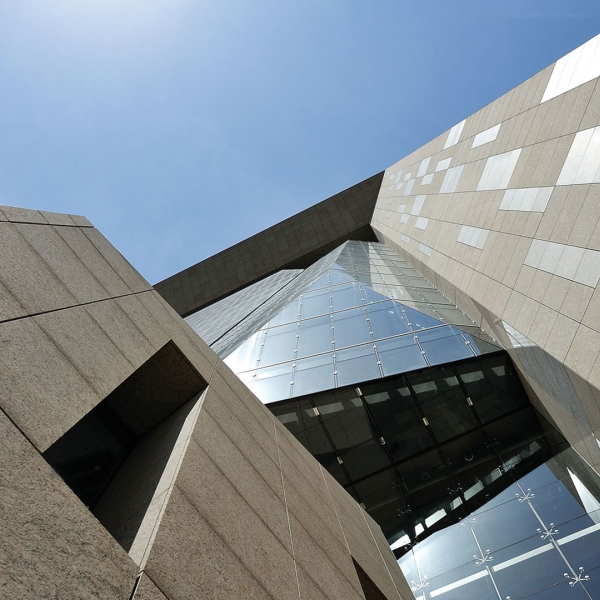
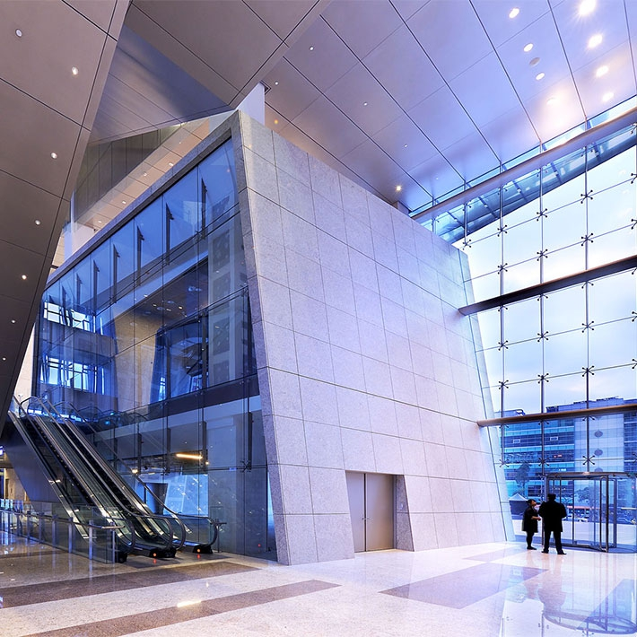
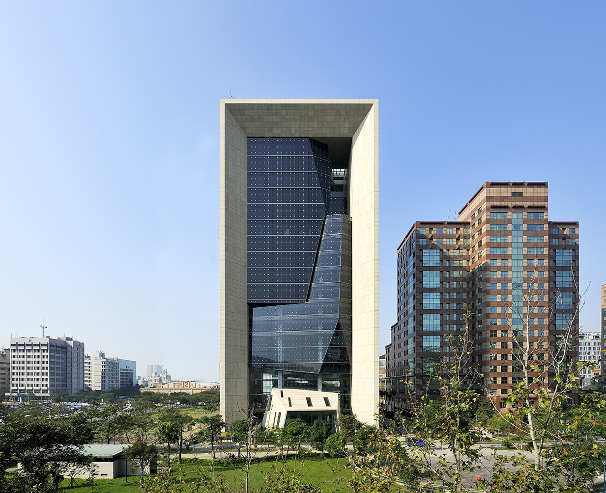

Kelti Group Headquarters
Taipei, Taiwan - 2009
The Kelti Group Headquarters, located at No. 105 Songren Road in the Xinyi District of Taipei, Taiwan, is a 19-story landmark completed in 2009. The 91-meter-tall structure is a masterclass in structural expression and material elegance. It serves as the corporate headquarters for the Kelti Group and also houses the Taipei branch of the Bank of China. The building is situated at the terminus of a major street in a bustling downtown area, utilizing its majestic form and a generous, beautifully crafted public plaza to anchor its prominent site.
Architecturally, the complex is composed of two low-rise volumes flanked by service cores on either side, which support a high-rise "crystal glass" volume suspended from a massive portal frame. The service cores are strategically located on the north and south sides to provide maximum interior flexibility for the spaces in between. The exterior is characterized by delicate glass volumes that create a translucent, crystalline appearance during the day. At its base, the building’s entrance is formed by the gap between the lower volumes, leading into an expansive first-floor lobby that allows natural sunlight to stream into the restaurants located in the basement levels.
The interior program is thoughtfully stratified to accommodate diverse commercial and corporate functions. The lower levels are designated for showrooms and restaurants, while the middle section contains high-end corporate office spaces. The crowning feature of the tower is a 13.5-meter-high, sky-lit event hall on the top floor, which offers spectacular panoramic views of the Taipei skyline. Beyond its functional utility, the building has become a cultural icon in the district, known for hosting its own early New Year’s Eve fireworks displays and featuring prominent public art, such as the "King Kong Rhino" sculpture on its front plaza.



